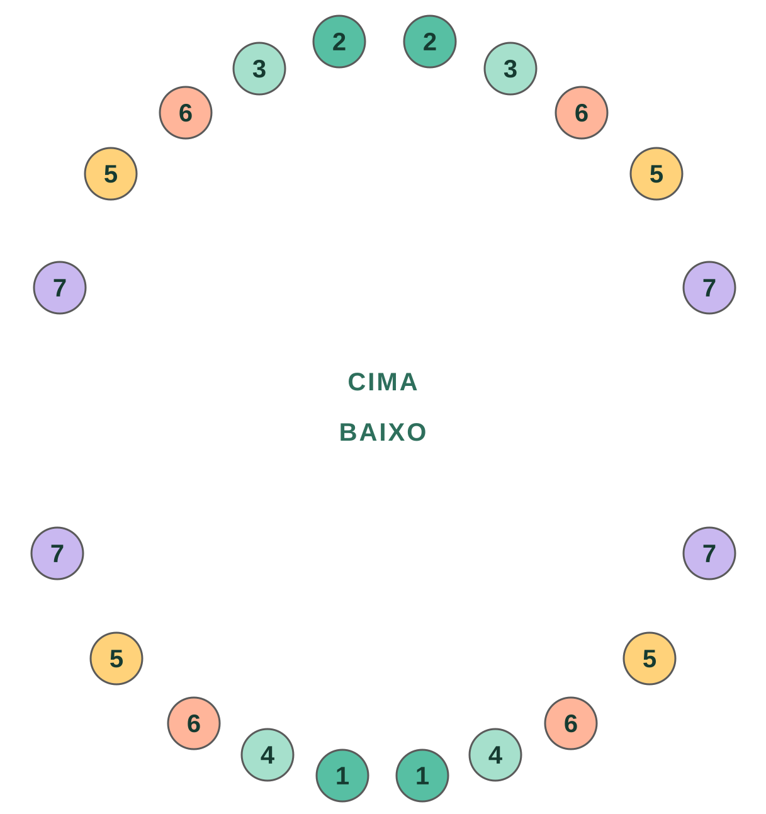

Nesta página · 9 seções
Em resumo
A maioria dos bebês tem o primeiro dente por volta dos 6 meses, embora o mais comum seja entre 4 e 12 meses, e alguns bebês saudáveis só o têm um pouco mais tarde. Os incisivos centrais inferiores costumam nascer primeiro, e os 20 dentes de leite estão completos por volta dos 2 a 3 anos. Muitos bebês não seguem a ordem das tabelas, e quase sempre não tem problema. Procure o pediatra se aos 18 meses ainda não tiver nascido nenhum dente.
- Primeiro dente
- ~6 mesescomum entre 4 e 12 meses
- Costumam nascer primeiro
- Incisivoscentrais inferiores
- Dentes de leite
- 20completos por volta dos 2 a 3 anos
- Procure o pediatra se
- 18 mesessem nenhum dente
Quando nasce o primeiro dente
O primeiro dente costuma aparecer por volta dos 6 meses. Mas “por volta” é bem amplo aqui: há bebês que têm um dente aos 4 meses e outros que chegam a 1 ano ou um pouco mais sem nenhum, e os dois casos são normais. A genética pesa muito: se os seus dentes (ou os do seu parceiro ou parceira) nasceram tarde, é provável que os do seu bebê também.
Os dentes nascerem antes ou depois não diz nada sobre como o seu bebê está se desenvolvendo nem sobre quão saudáveis serão os dentes dele.
Em que ordem costumam nascer
Os livros descrevem esta ordem habitual, em pares:

| Dentes | Idade aproximada |
|---|---|
| 1Incisivos centrais inferiores | 6-10 meses |
| 2Incisivos centrais superiores | 8-12 meses |
| 34Incisivos laterais (superiores e inferiores) | 9-16 meses |
| 5Primeiros molares | 13-19 meses |
| 6Caninos | 16-23 meses |
| 7Segundos molares | 23-33 meses |
Quando a ordem não é a dos livros
Esta tabela é uma média de muitas crianças, não um calendário que o seu bebê precise cumprir. Na prática, muitas crianças escolhem a própria ordem: os de cima nascem antes, um canino aparece antes dos incisivos laterais ou um molar se adianta. Quando isso acontece, é fácil se preocupar. Quase sempre não significa nada.
Vivemos isso de perto: em um bebê da nossa família nasceram primeiro os molares de baixo, e os incisivos laterais só apareceram um mês e meio depois. Durante essas semanas o espaço chamava a atenção e dava o que pensar. No fim, eles nasceram normalmente, e não aconteceu nada.
O que merece uma consulta não é a ordem, mas passar muito tempo sem nenhum dente ou algo que não pareça certo para você. Falamos disso mais abaixo.
Anote quando cada dente aparece
Guarde no diário do Raffy junto com as mamadas, o sono e o crescimento, e tenha à mão na próxima consulta.

Sintomas da dentição
Alguns bebês fazem os dentes sem que ninguém perceba; outros passam mais dificuldade. Nos dias antes de um dente aparecer, é comum que o bebê:
- Babe mais que o normal e tenha a pele do queixo irritada.
- Leve tudo à boca e queira morder.
- Tenha a gengiva inchada ou avermelhada.
- Fique mais irritado ou durma um pouco pior.
Os dentes dão febre? Sempre se disse que sim, mas não é verdade. Quando um dente nasce, a temperatura pode subir algumas décimas, sem chegar a ser febre. Se o seu bebê tiver 38 °C ou mais, diarreia, vômitos ou resfriado, não atribua à dentição e procure o pediatra como faria em qualquer outro momento.
E a assadura? É outra crença muito difundida, mas não há provas de que os dentes a causem. A assadura costuma ser causada por umidade, atrito ou mudança nas fezes, e é tratada como em qualquer outra ocasião.
Como aliviar o desconforto
- Massageie a gengiva com um dedo limpo por alguns minutos.
- Ofereça um mordedor firme e gelado na geladeira, nunca no congelador: o frio extremo pode machucar a gengiva.
- Seque a baba com frequência com um paninho macio para evitar irritações.
- Se já come alimentos sólidos, algo frio e macio (como uma fruta gelada amassada) pode acalmar, sempre com supervisão.
- Se estiver com muita dor, pergunte ao pediatra se ele pode tomar paracetamol e em que dose, de acordo com o peso.
O que evitar
- Colares e pulseiras de âmbar ou de dentição: não há provas de que aliviem, e a FDA e a AAP alertam para o risco de asfixia e estrangulamento.
- Géis ou pomadas com benzocaína ou lidocaína: a FDA (a agência de medicamentos dos EUA) desaconselha o uso na dentição: oferecem pouco ou nenhum benefício e podem causar problemas graves, como uma alteração do sangue que reduz o oxigênio (metemoglobinemia).
- Comprimidos ou géis “homeopáticos” para a dentição: não há provas de que funcionem e podem conter substâncias nocivas.
- Molhar a chupeta ou o mordedor em açúcar, mel ou bebidas alcoólicas. O mel, além disso, não deve ser dado antes de 1 ano pelo risco de botulismo.
Segurança pediátrica: quando procurar o pediatra
- Aos 18 meses, nenhum dente nasceu.
- Febre de 38 °C ou mais, diarreia ou vômitos: não atribua aos dentes. Se tiver menos de 3 meses e chegar a 38 °C, ligue já.
- Recusa comer ou beber, ou molha muito menos fraldas que o normal.
- Um dente nasce quebrado, com manchas ou de uma cor estranha, ou o bebê nasce com algum dente.
- Algo não parece certo para você, mesmo que não esteja nesta lista.
Este artigo é educativo e não substitui a avaliação do seu pediatra.
Perguntas frequentes
É normal o meu bebê não ter dentes com 1 ano?
Sim. Há bebês saudáveis que têm o primeiro dente depois de 1 ano. Comente na consulta e procure o pediatra se aos 18 meses ainda não tiver nascido nenhum.
É normal os molares nascerem antes dos incisivos?
Pode acontecer e quase sempre não tem importância. A ordem das tabelas é uma média; muitas crianças seguem a própria e os dentes que faltam acabam nascendo semanas ou meses depois.
Os dentes dão febre?
Podem subir a temperatura algumas décimas, mas não causam febre de 38 °C ou mais. Se houver, procure outra causa com o pediatra.
Quanto tempo dura o desconforto de cada dente?
Costuma ser notado alguns dias antes e durante a saída do dente, e depois passa.
Quando começo a escovar os dentes dele?
Desde o primeiro dente, duas vezes ao dia, com uma escova infantil e uma quantidade de pasta com flúor do tamanho de um grão de arroz.
Fontes
- Sociedade Brasileira de PediatriaGuia de Saúde Oral Materno-Infantil (PDF)
- American Academy of Pediatrics · HealthyChildren.orgTeething: 4 to 7 months (em inglês)
- American Dental Association · MouthHealthyBaby teeth (em inglês)
- American Dental Association · MouthHealthyPrimary tooth development: tabela de idades de erupção (PDF, em inglês)
- FDASafely soothing teething pain in infants and children (em inglês)
- NHS (Reino Unido)Baby teething symptoms (em inglês)
Revisamos este artigo com base nestas fontes em 11 nov 2026. Conteúdo educativo, não é orientação médica. Política editorial